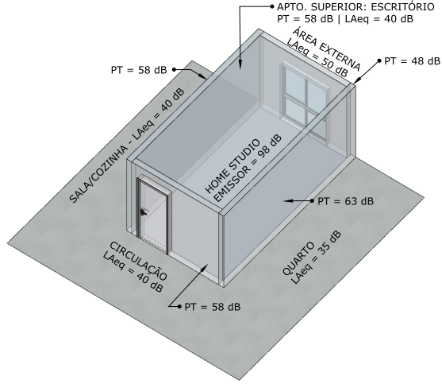

Centro de eventos
Vinícola Luis Argenta
Flores da Cunha - RS
O projeto parte da necessidade de isolamento acústico a fim de reduzir perturbações sonoras sobre a vizinhança no entorno.

Pousada Hortênsias Douradas
Canela - RS
Projeto acústico de regularização de pousada situada próxima ao aeródromo, em zona de incidência de ruído aéreo produzido por tráfego de aviões.

Home studio
Home studio
Porto Alegre - RS
Projeto executivo de isolamento acústico em área de apartamento, cujas finalidades de uso se atribuem a atividades musicais em home studio.